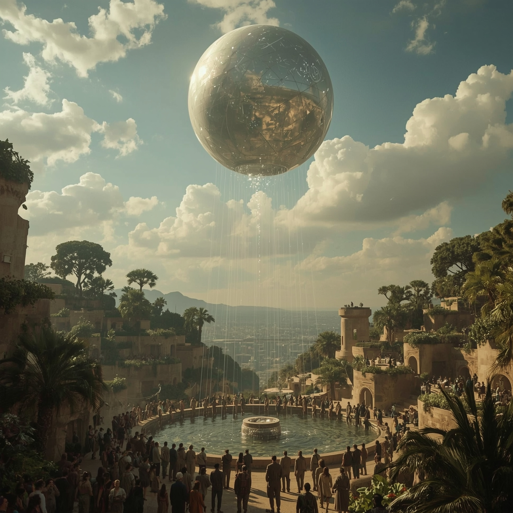

21. I stało się, że Trójca twórców spojrzała na swe dzieło. Było ono kompletne, gotowe do wdrożenia. Projekt autorstwa Proroka Kamila był doskonały w swych założeniach – przewidział niszę, której nikt inny nie dostrzegał.
22. Wykonanie przez Anioł A'gathę było mistrzowskie. Użyła materiałów z recyklingu kosmosu, tworząc formę minimalistyczną, energooszczędną i zaskakująco odporną.
23. A oprogramowanie, które zaimplementował Mędrzec Michał z Ce-Esu, było rewolucyjne. "Dar Wielkiej Ciszy" nie był prostą funkcją, lecz całym systemem operacyjnym duszy, opartym na architekturze spokoju.
"Cel jest jasny. Lud Semkurzan. To dla nich przeznaczony jest ten dar."
